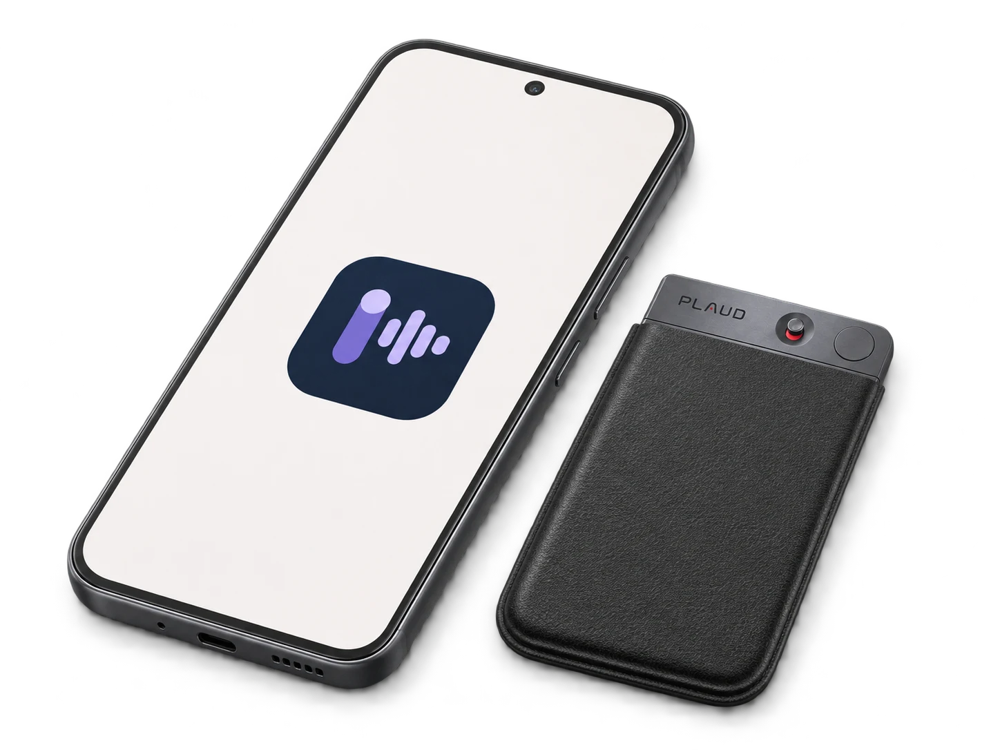
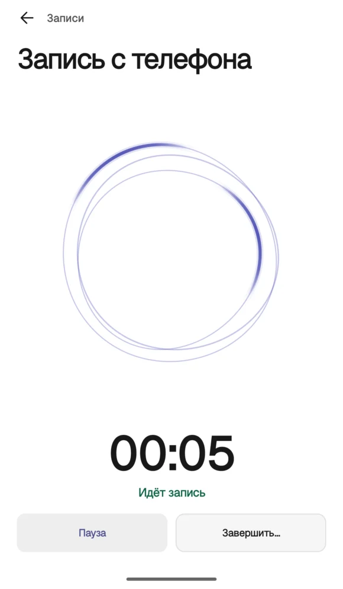
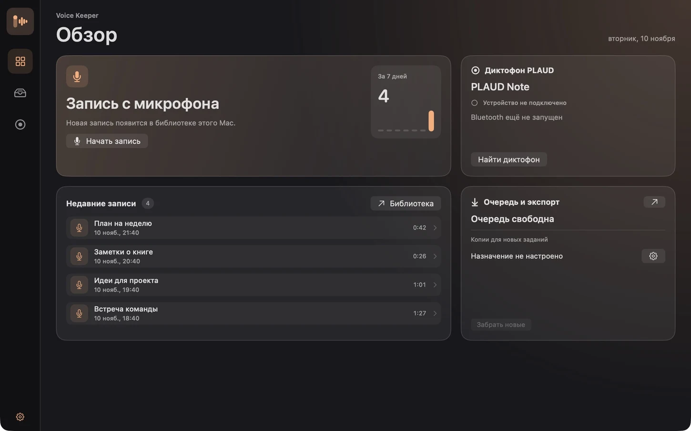

Voice Keeper
Voice Keeper is an Android and macOS app for recording audio, importing files or recordings from a PLAUD Note, and transcribing speech on your device. Your library is stored locally.
If you enable Google Drive backup, Voice Keeper requests access to create and verify backup files in your own Google account and to restore supported app settings. You choose whether to back up recordings, transcripts, analyses, and settings.
Voice Keeper — приложение для Android и macOS. Оно записывает звук, импортирует аудиофайлы и записи с PLAUD Note и расшифровывает речь на устройстве. Библиотека хранится локально.
Если включить резервное копирование в Google Диск, Voice Keeper запрашивает доступ, чтобы создавать и проверять копии в твоём Google-аккаунте и восстанавливать поддерживаемые настройки. Ты выбираешь, копировать ли записи с расшифровками и разборами, настройки или обе категории.



По запуску договорились начать с десяти пользователей. Оля, собери список к четвергу.
Твой PLAUD.Твои записи.Твой голос.Твой архив.
Аудио остаётсяна устройстве.
Из аудиов текст.
Аудио записывается на диктофоне. Voice Keeper забирает выбранную запись прямо на телефон или Mac.
Запиши с микрофона или импортируй аудиофайл прямо в Voice Keeper на телефоне или Mac.
Твои разговорыостаются у тебя.
Расшифровывай прямо на телефоне или Mac. Загрузи Whisper Small или Parakeet один раз и пользуйся офлайн без подписки и пакетов минут.
Прочитай, что сказали.Забери главное.
Послушай одну запись, прочитай её расшифровку и посмотри пример разбора по шаблону.
Любой из 15 шаблонов можно изменить. Добавь свой или настрой выбор по фразе.
План запуска
Расшифровка
Разбор по шаблону
Команда решила начать с десяти пользователей. Оля соберёт список, Антон проверит инструкцию. Дата общего запуска пока открыта.
Решение
Начать с десяти пользователей.
Открытый вопрос
Когда назначить общий запуск?
- Оля — собрать список к четвергу.
- Антон — проверить инструкцию до пятницы.
Можно подключить ChatGPT с подходящей подпиской. Он получает расшифровку и инструкции шаблона. Аудио остаётся на устройстве.
Архив, который у тебя.
Папки, теги, поиск по расшифровкам и экспорт WAV живут в локальной библиотеке. Удаление записи с диктофона требует проверки исходника и копии, а затем твоего подтверждения.
Куда уходит аудио?
Аудио и расшифровки изначально на твоём устройстве. Если нужна копия, место выбираешь ты.
На твоём устройстве
Аудио, библиотека и расшифровки
Твоё хранилище
Локальная папка, Google Drive, Яндекс Диск или HTTPS WebDAV. Настройка зависит от платформы и сервиса.
Текст для разбора
OpenAI получает расшифровку и инструкции шаблона. Аудио остаётся на устройстве.
Что важно знать.
Обязательно иметь PLAUD Note?
Можно записать с микрофона или импортировать аудиофайл. Из диктофонов поддерживается оригинальный PLAUD Note.
Что нужно для подключения диктофона?
Для первого подключения импортируй существующий комплект доступа от привязанного диктофона. Подключение идёт по Bluetooth. Для передачи можно использовать локальную сеть Wi-Fi диктофона.
Нужна ли подписка?
Для локальной расшифровки Whisper Small или Parakeet нужна только загруженная модель. Для резюме через ChatGPT понадобится аккаунт с подходящей подпиской.
Можно освободить место на диктофоне?
Выбранную запись можно удалить после проверки копии и подтверждения в приложении.
Поддерживаемые платформы
Ссылки на скачивание появятся после публикации сборок.
- Android
- Android 12 и новее, ARM64.
- macOS
- macOS 14 и новее, Apple Silicon.
- Windows / Linux
- Общий десктопный клиент в разработке.
- iOS
- Пока вне планов. Поддержка расходов на подпись Apple обсуждается отдельно.